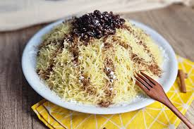

seffa recipe
main menu

Seffaisa traditional and celebrated Moroccan dish known for its unique blend of sweet and savory flavors. It typically uses steamed fine vermicelli noodles ( chaariya ) or, less commonly, couscous or rice, enriched with butter and raisins.
ingrediants
- Fine Vermicelli noodles ( chaariya ), about 500g
- Butter (approx. 50g)
- Grapes (optional, about 1/2 cup)
- Powdered Sugar (for mixing in and for garnish)
- Cinnamon (for garnish)
- Ground toasted almonds (for garnish)
- Water/Oil/Salt (for initial steaming preparation)
instructions
- Prepare the Vermicelli: Toss the fine vermicelli noodles with a little oil and salt to coat the strands.
- First Steam: Place the coated noodles in the top basket of a couscous maker. Steam over boiling water for about 15–20 minutes.
- Soak and Fluff: Transfer the noodles to a large bowl. Sprinkle with cold salted water, add the raisins (if using), and gently fluff the noodles with your hands or a spoon to separate them. Let them absorb the water for a few minutes.
- Second Steam: Return the noodles to the couscous maker and steam for another 15 minutes.
- Final Steam & Butter: Repeat the soak/fluff step. For the final (third or fourth) steam, cook until the noodles are tender (about 10-15 minutes).
- Mix & Garnish: Transfer the tender noodles to a large platter. Mix in the butter and some powdered sugar until melted and well combined.
- Serve: Mound the seffa into a dome shape. Garnish generously with a layer of powdered sugar, lines of ground cinnamon, and the ground toasted almonds. Serve immediately while hot.